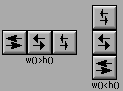

Class Hierarchy
Fl_Valuator
|
+----Fl_Adjuster
Include Files
#include <FL/Fl_Adjuster.H>
Description
The Fl_Adjuster widget was stolen from Prisms, and has proven
to be very useful for values that need a large dynamic range.

When you press a button and drag to the right the value increases.
When you drag to the left it decreases. The largest button adjusts by
100 * step(), the next by 10 * step() and that
smallest button by step(). Clicking on the buttons
increments by 10 times the amount dragging by a pixel does. Shift +
click decrements by 10 times the amount.
Methods
Creates a new Fl_Adjuster widget using the given position,
size, and label string. It looks best if one of the dimensions is 3
times the other.
Destroys the valuator.
If "soft" is turned on, the user is allowed to drag the value outside
the range. If they drag the value to one of the ends, let go, then
grab again and continue to drag, they can get to any value. Default is
one.